Vontela Sanjay Kumar
Naive Bayes Classifier
Overview
Sentiment analysis is a process of identifying whether the given text is positive or negative or neutral. In this experiment we used Naïve Bayes algorithm for doing sentient analysis. The dataset consists of 2 columns. One is reviews and the other is class which tells weather the review is fresh or rotten. The dataset consists of 480001 rows. Naïve Bayes is a probabilistic classifier that uses Bayes’ theorem to calculate the probability of text to each class. Naïve Bayes is a simple yet powerful classifier and it is widely used in natural language processing.
Naïve Bayes Algorithm:
Naïve Bayes classification uses bayes theorem to predict the probability of each text(review) from dataset to that of each class from the dataset. The class with highest probability will get be considered as most likely class.
Naive Bayes Formula
P(A|B) = P(B|A) * P(A) / P(B)
Import Libraries
The first step will be importing the libraries. For this problem I am using numpy, pandas, regex and tqdm
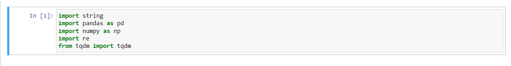Loading Dataset
The Next step is importing the dataset. We need to import dataset using read_csv method from pandas with encoding “cp1252”
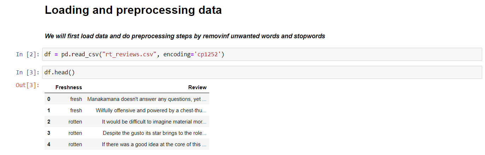Data Preprocessing
In the next step we are cleaning the data by removing stopwords and unnecessary characters. Stopwords are common words that are present in text, without stopwords the meaning of the text will not change.

Splitting Data
The next step is splitting the dataset into train, development and testing data.
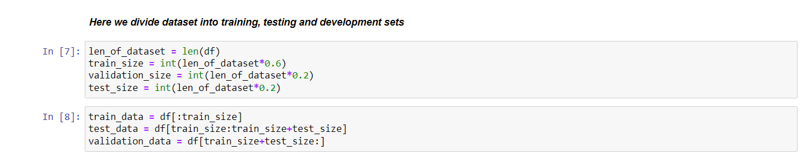Building Word Count
The next step is building a word count, from the word count I created a vocabulary list where I omitted rare words like if the occurrence is less than 5.
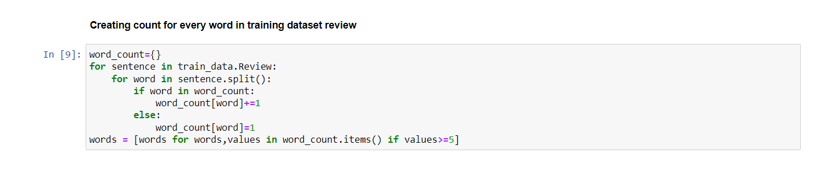In the next step we created 2 dictionaries called word_to_index and index_to_word in which word_to_index will have a elements like “doesn’t”:0 and in index_to_word it is reverse if word_to_index.
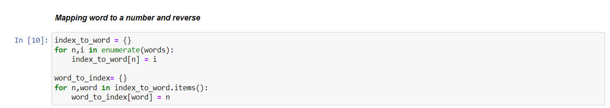 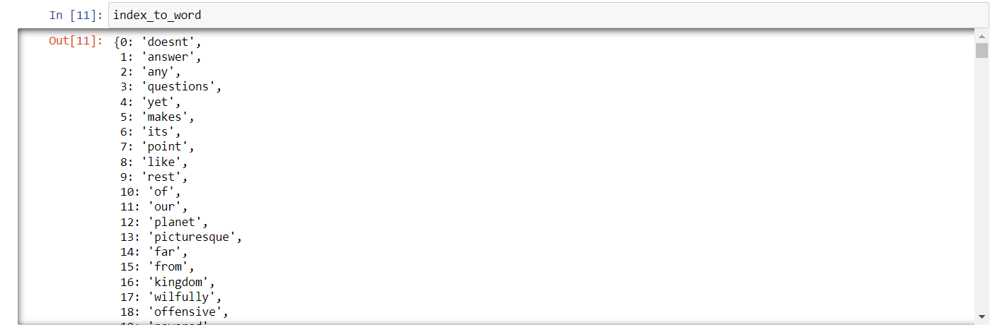 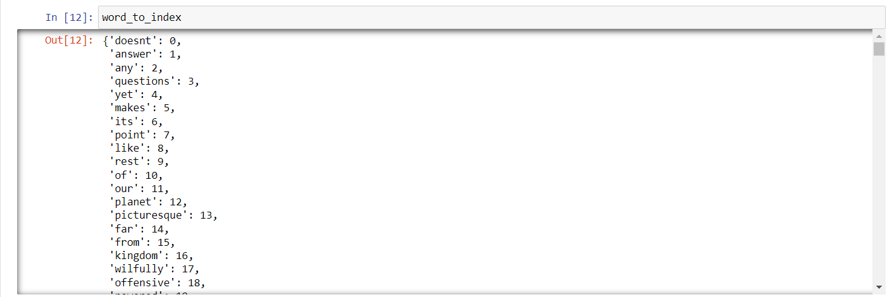Calculating Probability
The next step is finding the probability of each word. To calculate the probability of each word we will divide the occurrence of each word by length of total documents.
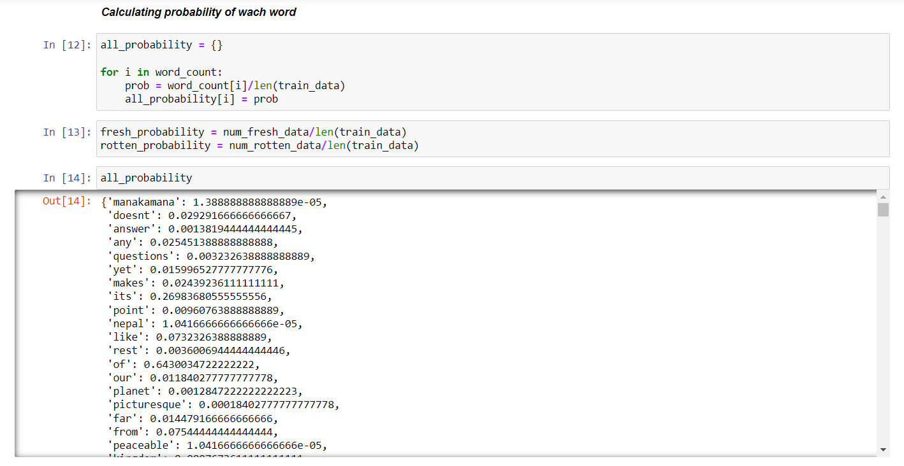Next step is calculating the conditional probability of each word to of each class(fresh, rotten). Conditional probability is the measure of the probability of an event occurring given that another event is already occurring.
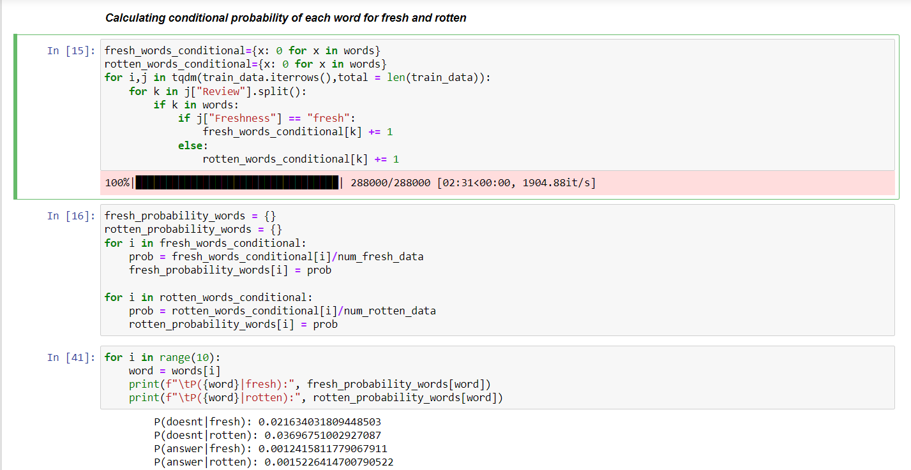
Smoothing
The next step is smoothing. In smoothing we solve the problem of zero probability adding 1 to the given probability and dividing it with len(class)*len(data)
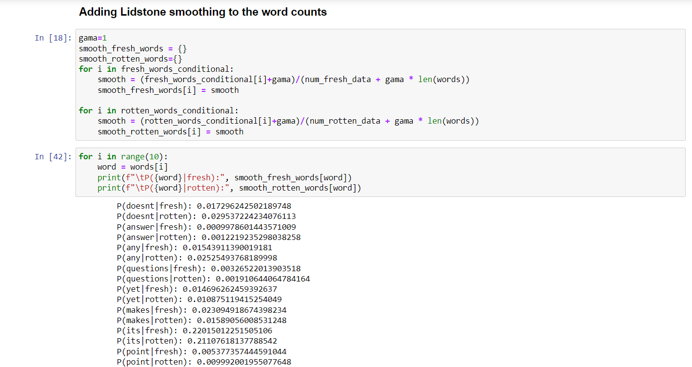Building Classifier for Development Data
The next step is predicting the class for the text in development data without smoothing and with smoothing
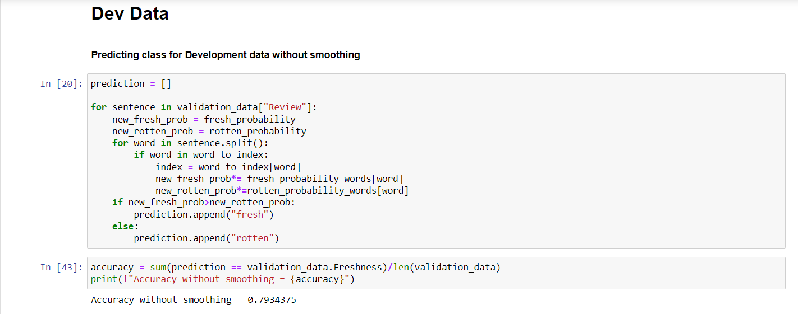 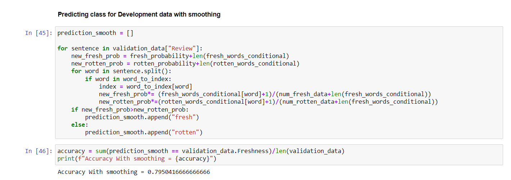We can observe from both accuracies that after smoothing the accuracy increased slightly.Before smoothing the accuracy is 79.343% and after smoothing the accuracy is 79.50%
Finding Top 10 words
The next step is finding the top 10 words of each class with highest probability The next step is predicting top 10 words of each class
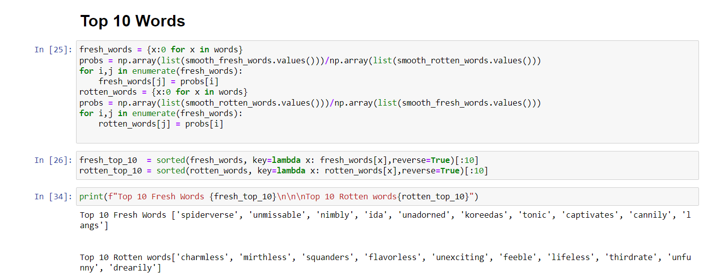 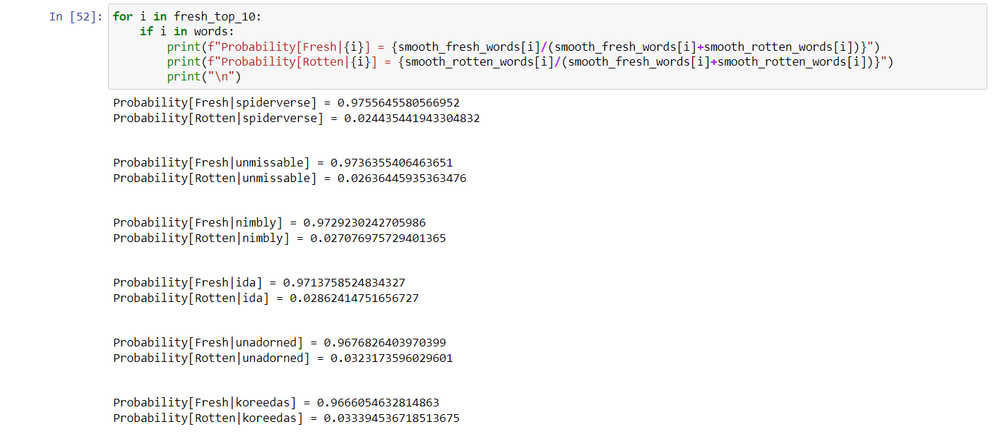 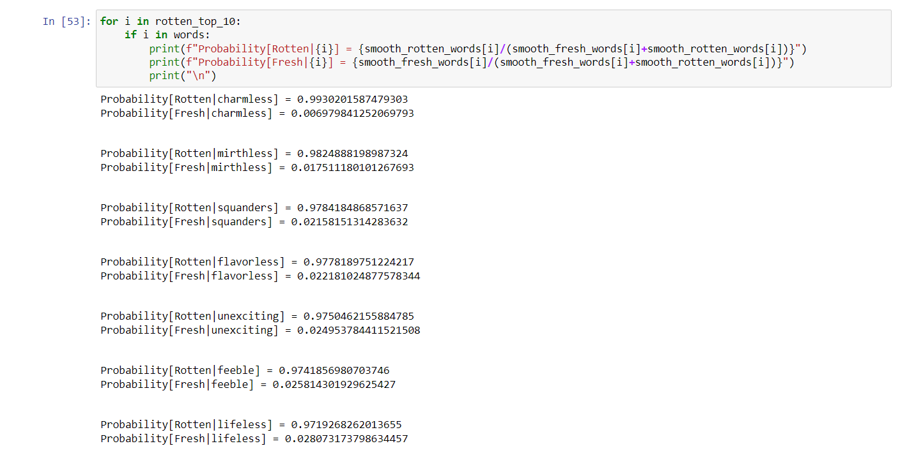Using classifier with optimal parameters on Test Data
The final step is predicting the text from test dataset with optimal parameters i.e using smoothing
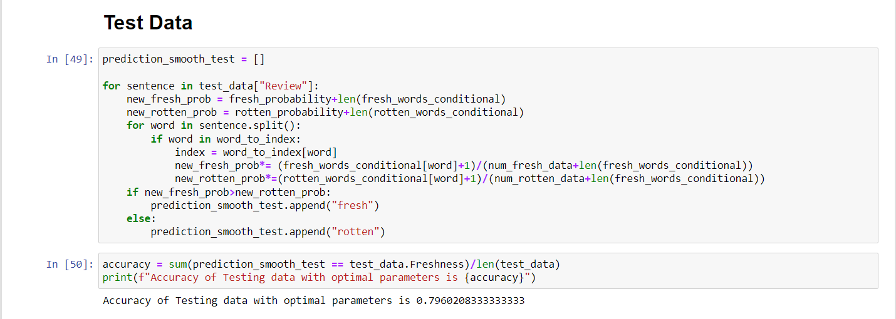Contribution
- Removed stop words from datased
- Removed all punctuation from data
- Built Naive Bayes Classifier from scratch
Reference
- https://vitalflux.com/quick-introduction-smoothing-techniques-language-models/